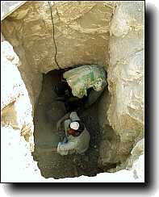
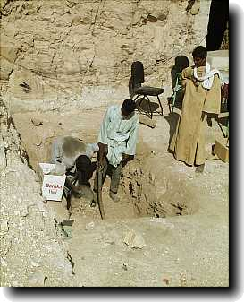
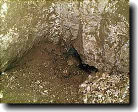
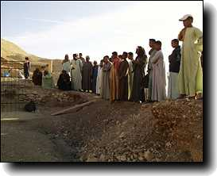
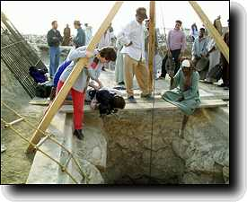
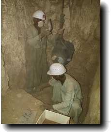

Sunday 5 December
Today was a busy day. Our expert in human remains, Tony Waldron, arrived and immediately set to work. The human remains from the past five seasons are stored at the bottom of the shafts in the tomb, and we began by opening one of them to retrieve the material. The aim of the exercise is to learn about the demography and pathology of those buried in TT99; in other words, how old they were, how large they were, and any interesting information about the illnesses from which they suffered. One such person was probably suffering from lung cancer, and on his skull are seen holes from a number of secondary tumours.
On the smaller of the courtyard shafts, a couple of possible rooms to the east and north were identified. It's not yet clear whether they lead anywhere. In the large courtyard shaft, the rock at the bottom was at last encountered on the east side, so we may not be far from finishing it.
|
|
Saturday 5 December
Getting to the chambers at the bottom of the big courtyard shaft means that we know how much work lies ahead for us in that area (a considerable amount!). The uncertain area is that of the two remaining shafts located in the courtyard. In consequence, we decided to start working on these as well, and some extra workmen were taken on to enable this to continue along with the work on the big shaft. The shaft we chose is the one nearer the tomb, called Shaft G in our numbering. It measures about 2 x 1 m.
Readers should not forget that alongside all the other things we are describing, the ceramics team continues its valuable work in going through the immense amount of pottery from the last two seasons. So far they have processed more than 600 kg of material!
|
 |
Thursday 3 December
Work in the shaft concentrated initially on removing enough debris so that we were able to enter the rooms beyond the bottom of the shaft. Helen Strudwick was the first through, and reported that the chambers extended 10 m to the west, and then turned south. A further examination by Nigel Strudwick showed that this indeed was the set of chambers excavated by Mond in 1903, as we speculate elsewhere on this site. What is clear, however, is that Mond only cleared the pit and not the chambers, since the latter are still very full of debris, in some places to within 50 cm of the ceiling. Rather, it seems as if he sent in a couple of his workmen who rummaged around for anything easily accessible, and came back out again; Mond or another may also have gone down to make the plan, which looks broadly correct.
Once the chambers had been examined, and again for the benefit of the film crew, work on clearing the shaft to its bottom continued.
|

|
Wednesday 2 December
Things started pretty much as they do most days. Work on the ceramics continued, and the digging down the courtyard shaft went on. We realised that we had now gone down the shaft over 12 m, and still no sign of the rooms off it. In the meantime some filming was going on in the tomb.
At about 12:00 we at last encountered the doorway going off to the west from the shaft. So far it has only been possible to peep through a small opening, but we can see a large room or corridor containing a number of stones. The film crew were dragged from their showers to record the moment! Tomorrow we hope we shall be able to get into it and tell you more about what it contains.
|
Tuesday 1 December
I was right yesterday; a lot of potential workers showed up, and it was very difficult to select the number we needed. But we got started on digging the courtyard shaft, in full view of the film crew. Progress of about 75 cm was made during the morning. Finds consisted mainly of pottery as in the previous season. For the digging, we have two men doing the excavating, supervised by one of the team, and two further men working the rope to lift the baskets. The baskets are taken by the rest of the men to the three sievers at our dump.
|
 |

|

 The Dig Diary 1998--Part 2
The Dig Diary 1998--Part 2